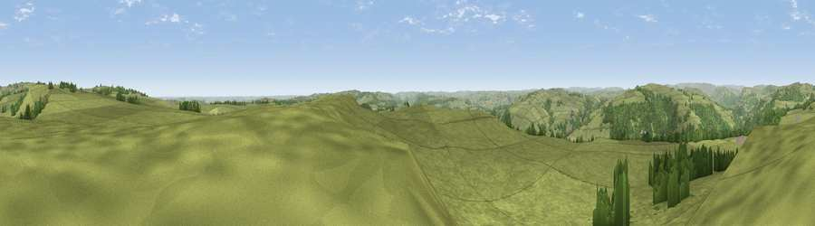

Viewpoint near Froggatt
#8729 in England · top 7% of its area beats it · near FroggattThe view, rendered

A 360° render of this exact spot computed from the terrain model, tree cover and land cover — summer colours, afternoon light, calibrated against photographs of famous viewpoints. Real trees, hedges and buildings will differ in detail.
The panorama
Grey silhouette: terrain skyline in each direction (720 bearings, Earth curvature and refraction included). Dashed green: skyline with trees (+15 m) and buildings (+8 m) as obstacles. Blue strip: how far the ground is visible on each bearing.
Where the view opens
Wedge length = distance to the farthest visible ground on that bearing (vegetation-aware). Rings at 10, 25 and 50 km.
What fills the view
87% grassland · 12% woodland ·
Angular shares of the visible panorama (visual magnitude), not map area. Landscape diversity 0.19 (0–1 Shannon).
Key numbers
More beautiful places nearby
The staircase of upgrades: each row has a higher view potential than everything closer. Driving times are estimates from straight-line distance, calibrated against real road routing — check an actual route before setting out.
| Place | Direction | Drive | Score |
|---|---|---|---|
| Viewpoint near Holmesfield | NE · 3 km | ~8 min | 67.2 |
| Viewpoint near Holmesfield | NE · 4 km | ~9 min | 69.4 |
| High Rake | WSW · 6 km | ~13 min | 71.1 |
| Viewpoint near Thornhill | NNW · 14 km | ~25 min | 74.1 |
| Viewpoint near Wharncliffe Side | NNE · 21 km | ~35 min | 75.2 |
| Tissington Hill | SSW · 26 km | ~42 min | 75.5 |
| Wild Bank | NW · 35 km | ~53 min | 76.2 |
| Viewpoint near Carrbrook | NW · 36 km | ~54 min | 77.1 |
53.28416, -1.61111 · source: screening · position refined by local search. Computed location — check access rights before visiting.